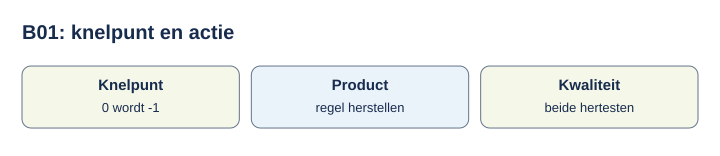
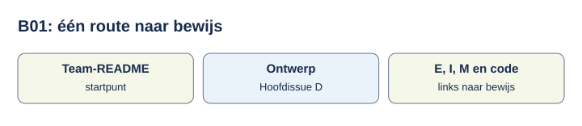
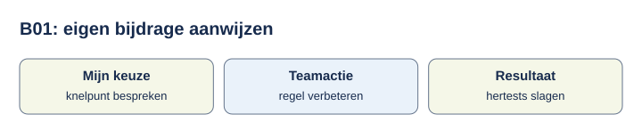

Werkboek Manager
Werk steeds aan jullie eigen project. B01 is een voorbeeld. Bewaar bewijs één keer en link ernaar vanuit de team-README. Wij werken zoals in een echt team: één duidelijke README, bruikbare Issues en afspraken over wie welke taak doet.
Oefening 1 | Plan de functie (30 november)

Opdracht: Richt als eerste de team-README in. Gebruik de vier kopieerbare issuebeschrijvingen om D, E, I en M aan te maken. Wijs D toe aan Marketing, E aan Manager, I aan Product en M aan Kwaliteit. Zet de vier links in de README. Laat elke rol het eigen schema uit Issues als reactie onder D plaatsen. Lees elkaars reacties en controleer alle vier bijdragen en docenttoegang. Verstuur daarna één keer het mijlpaalformulier namens het team in met leerlingnummers, rollen, professionele productnaam, voortgang, teamafspraak en knelpunt. Leerlingnummers horen uitsluitend in het formulier. De teamcode wordt automatisch toegekend. Nummer teams niet zelf. De eindinlevering is op 8 december. B01-voorbeeld: Product maakt de uitleenknop, Kwaliteit noteert de uitkomsten die bij voorraad 1 en 0 worden verwacht, Marketing beschrijft het verhuurbedrijf en Manager bewaakt de README-links.
 Opdracht: Richt als eerste de team-README in. Gebruik de vier kopieerbare issuebeschrijvingen om D, E, I en M aan te maken. Wijs D toe aan Marketing, E aan Manager, I aan Product en M aan Kwaliteit. Zet de vier links in de README. Laat elke rol het eigen schema uit Issues als reactie onder D plaatsen. Lees elkaars reacties en controleer alle vier bijdragen en docenttoegang. Verstuur daarna één keer het
Opdracht: Richt als eerste de team-README in. Gebruik de vier kopieerbare issuebeschrijvingen om D, E, I en M aan te maken. Wijs D toe aan Marketing, E aan Manager, I aan Product en M aan Kwaliteit. Zet de vier links in de README. Laat elke rol het eigen schema uit Issues als reactie onder D plaatsen. Lees elkaars reacties en controleer alle vier bijdragen en docenttoegang. Verstuur daarna één keer het Klaar als: Is het ontwerp met twee situaties op 30 november klaar? Weet ieder teamlid wat de volgende stap is?
Jullie project: Gebruik jullie bestaande project en planning. Bewijs: de vier reacties onder D en de links in de team-README.
 Bewijs: de vier reacties onder D en de links in de team-README.
Bewijs: de vier reacties onder D en de links in de team-README.Oefening 2 | Bespreek een knelpunt (4 december)

Opdracht: Spreek vóór het bouwen in E af hoe invoer, antwoorden en foutgedrag tussen onderdelen aansluiten. Laat Product de onderdelen samenvoegen. Bekijk daarna met Kwaliteit de eerste versie en de twee uitkomsten in E. B01-voorbeeld: bij voorraad 0 werd de voorraad −1. Spreek af wie de regel verbetert en wie beide situaties opnieuw test in I.
Klaar als: Zijn er op 4 december een werkende versie, twee eerste testuitkomsten en één concreet verbeterpunt? Is de volgende actie duidelijk?
Jullie project: Bespreek jullie echte knelpunt met het team. Zet aansluitafspraken, de eerste versie, tests en verbeterpunt op de passende plek in E. Gebruik bestaande Issues; maak geen extra verslag.
Oefening 3 | Maak de README navolgbaar (8 december, 16.00 uur)

Opdracht: Zet in de team-README links naar D, E, I en M, naar het werk uit les 1–4 en naar de geteste versie. D bevat het ontwerp en de verwachtingen, E de eerste versie en tests, I de verbetering en hertests en M de mondelingvoorbereiding. Herhaal het bewijs niet in de README. B01-voorbeeld: een lezer vindt het uitleenschema, de testuitkomsten, de hertests en de commit en probeert uitlenen bij 1 en 0 onder ‘Zo probeer je het’.
Klaar als: Kan iemand met toegang de geteste versie binnen twee minuten openen en proberen? Linkt de team-README naar D, E, I en M, is de geteste versie en toegang gecontroleerd en levert Manager uiterlijk 8 december om 16.00 uur één README-link in via het eindformulier #3? Staat bij elke taak wie die uitvoert en waar de uitkomst wordt bijgehouden?
Jullie project: Maak de bestaande team-README duidelijk met kopjes en links naar D, E, I en M. Geef elke taak één eigenaar, bijvoorbeeld ‘Noor maakt de knop’ en ‘Sam test voorraad 0’. Zet de taakverdeling in het bestaande Issue. Bewijs: de README als ingang en het werk op de bestaande Issues D, E, I en M.
Oefening 4 | Bereid jouw mondeling voor (10 tot 17 december)

Opdracht: Bereid je mondeling uiterlijk 8 december voor in M. Open een stukje eigen werk. B01-voorbeeld: wijs aan hoe je het knelpunt −1 aan het team koppelde en hoe de hertest terug te vinden is.
Klaar als: Kun je je eigen bijdrage uitleggen? Voorspel bij nieuwe invoer de uitkomst en leg die uit met gegevens en regel. Vertel wat je teamgenoot inbracht en wat daarmee gebeurde.
Jullie project: Kies jullie echte voorbeeld. Bewijs: je wijst het bestaande werk aan tijdens het mondeling. Lever geen apart verslag in.